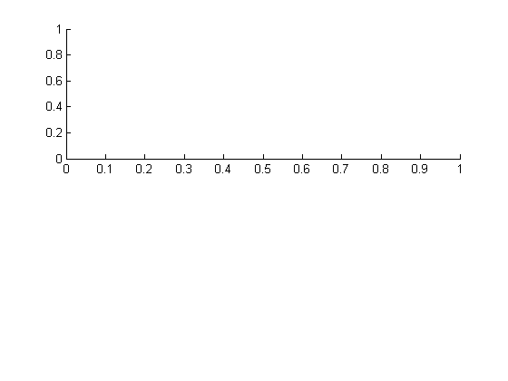
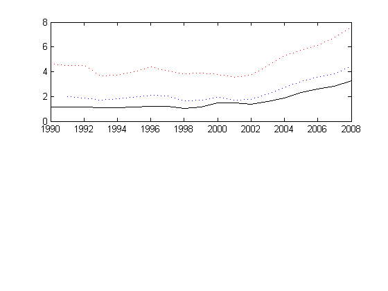
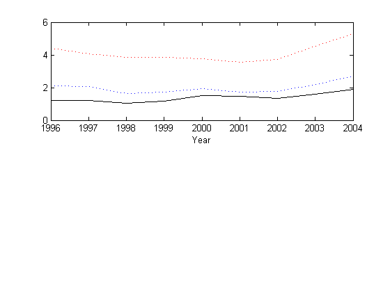
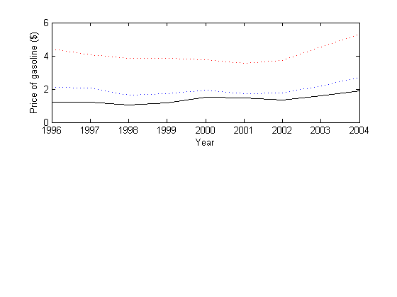
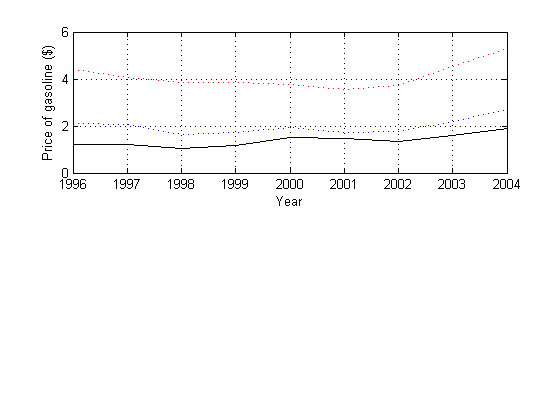
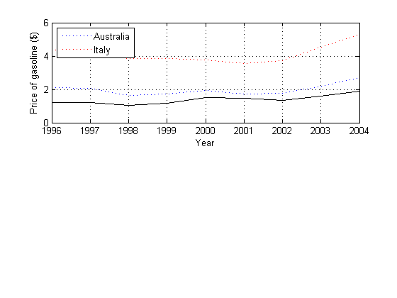
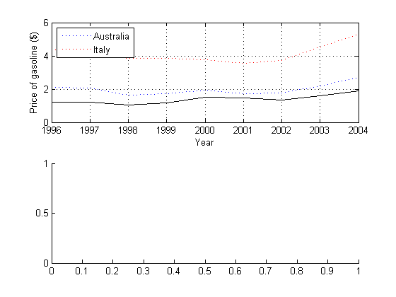
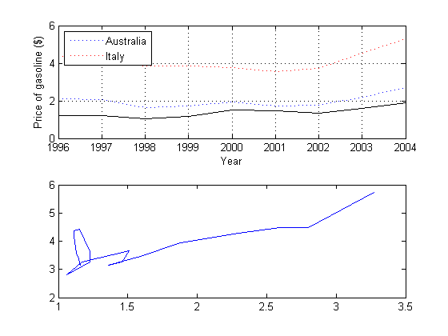
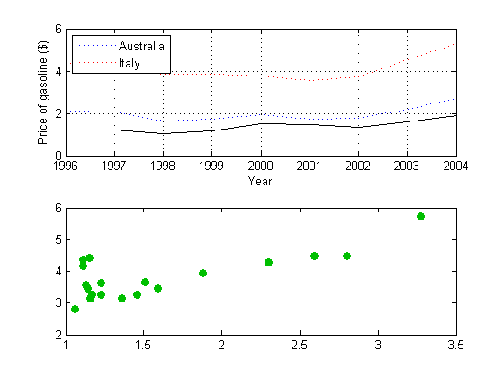
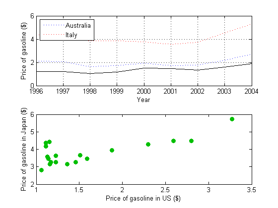

Exercise 3
Contents
3.1 Load the gasprice data
load ../gasprices;
Create the first subplot
a1 = subplot(2,1,1);
Plot the data
h1 = plot(a1,gasprice(:,1),gasprice(:,11),'k',gasprice(:,1),gasprice(:,2),'b:',gasprice(:,1),gasprice(:,6),'r:');
Alternatively, you could plot it this way
h1 = plot(a1,gasprice(:,1),gasprice(:,11),gasprice(:,1),gasprice(:,2),gasprice(:,1),gasprice(:,6)); set(h1(1),'Color',[0 0 0]); set(h1(2),'Color',[0 0 1],'LineStyle',':'); set(h1(3),'Color',[1 0 0],'LineStyle',':'); Configure the x-axis
set(a1,'XLim',[1996 2004]); set(get(a1,'XLabel'),'String','Year');
Configure the y-axis
set(get(a1,'YLabel'),'String','Price of gasoline ($)');
Turn on the grid
set(a1,'XGrid','on','YGrid','on');
Build the legend
legend(a1,[h1(2) h1(3)],{'Australia','Italy'},'Location','NorthWest');
 3.2 Create the second subplot
a2 = subplot(2,1,2);
Plot Japan vs. US
h2 = plot(a2,gasprice(:,11),gasprice(:,7));
Configure the lineseries
set(h2,'LineStyle','none','Marker','o','MarkerEdgeColor',[0 0.75 0],'MarkerFaceColor',[0 0.75 0]);
Configure the axes
set(get(a2,'XLabel'),'String','Price of gasoline in US ($)'); set(get(a2,'YLabel'),'String','Price of gasoline in Japan ($)');